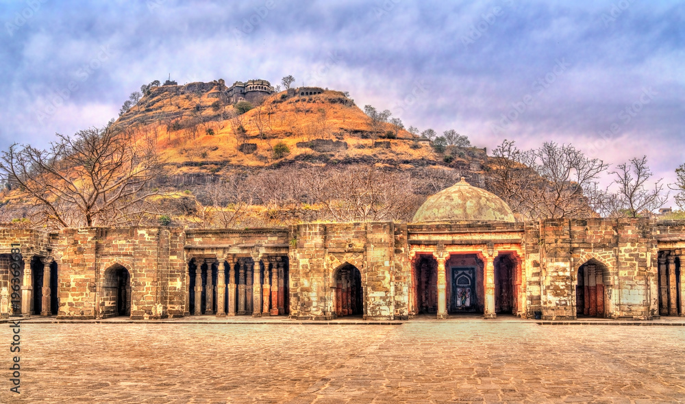
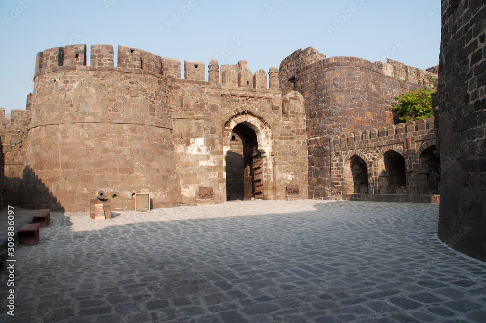
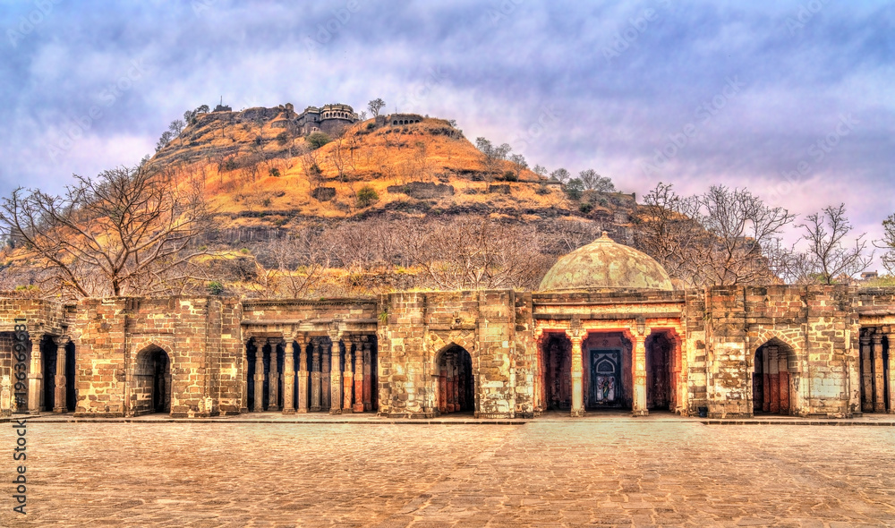
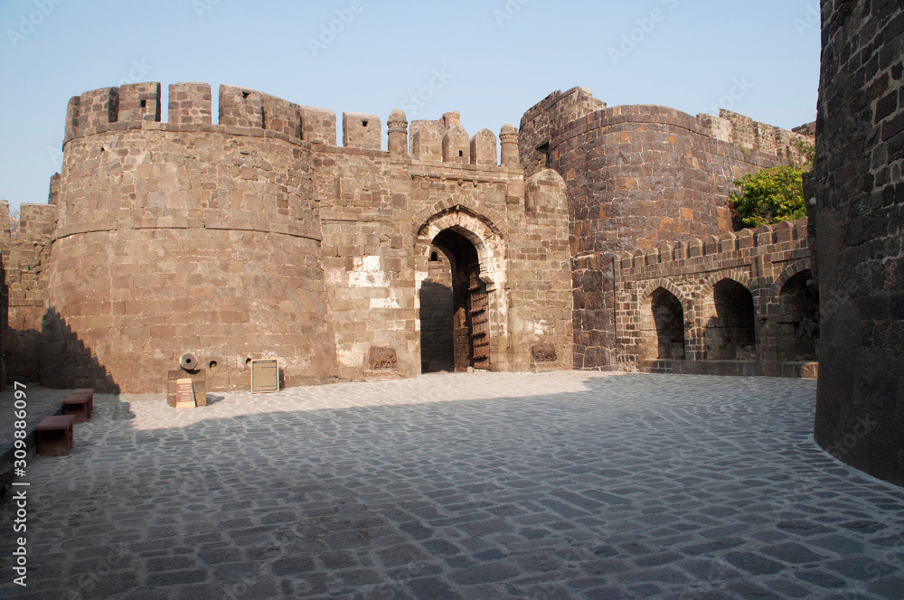

Bibi Ka Maqbara


Bibi Ka Maqbara – History
 Location:
Location:
City: Aurangabad (now Chhatrapati Sambhaji Nagar), Maharashtra, India Situated around 3 km from the city center, it is a major historical and tourist cite
🛕 Historical Background:
Built by: Prince Azam Shah, the son of Mughal Emperor Aurangzeb In memory of: His mother, Dilras Banu Begum (also known as Rabia-ud-Daurani), Aurangzeb’s first wife Year of construction: Between 1660–1679 AD Architect: Ata-ullah (son of Ustad Ahmad Lahauri, the chief architect of the Taj Mahal) Engineer: Hanspat Ra Located in Chhatrapati Sambhaji Nagar (formerly Aurangabad), it was commissioned around 1668 and is often called the "Taj Mahal of the Deccan" due to its striking resemblance to the Taj Mahal, though it was built with a much smaller budget Bibi ka Maqbara is a 17th-century tomb in Chhatrapati Sambhaji Nagar (formerly Aurangabad), Maharashtra, commissioned by the Mughal emperor Aurangzeb in memory of his first wife, Dilras Banu Begum. Often called the "Taj of the Deccan" due to its architectural resemblance to the Taj Mahal, it is built with a central marble dome
🎯 Purpose of Construction:
It was constructed as a mausoleum (tomb) for Dilras Banu Begum after her death in 1657 due to childbirth. Azam Shah aimed to replicate the Taj Mahal, built by his grandfather Shah Jahan for Mumtaz Mahal. It was intended to showcase filial devotion and serve as a lasting tribute to his mother
Sambhaji Nagar (Chhatrapati Sambhaji Nagar)


Location:
Chatrapati Shivaji Maharaj MuseumNear Govt. Arts & Science College ,Himayat Bagh, Chhatrapati Sambhaji Nagar (Aurangabad),Maharashtra – 431004, India
bit" />
🛕 Historical Background:
Chhatrapati Sambhajinagar (formerly Aurangabad) was founded in 1610 as Khadki by Malik Ambar, a key statesman for the Nizam Shahi dynasty. It was later renamed Aurangabad by the Mughal emperor Aurangzeb, who made it a center of power, and the city flourished with monuments like the Bibi Ka Maqbara. It became the capital of the Nizam Shahi and later a major city under Mughal rule, before becoming part of the Maratha Empire and then under British rule. The city was finally renamed in honor of Sambhaji Maharaj, the son of Chhatrapati Shivaji Maharaj, in 2016. Chhatrapati Shambhaji Nagar is a city in Maharashtra, India, formerly known as Aurangabad. It is a city rich in history and culture, famous for landmarks like the Ajanta and Ellora Caves, which are UNESCO World Heritage Sites. The city was renamed in honor of Chhatrapati Sambhaji Maharaj, the second ruler of the Maratha Empire
🎯 Purpose of Construction:
The city now known as Chhatrapati Sambhaji Nagar was originally founded in 1610 as Khadki by Malik Ambar, a minister of the Nizamshahi dynasty. Its construction was intended to establish a capital city for the kingdom in the Deccan region. Later, the Mughal emperor Aurangzeb turned it into a seat of power and renamed it Aurangabad. The purpose of construction evolved and was later tied to multiple successive rulers:
2.Daulatabad Killa (Daulatabad / Deogiri Fort)
 



Location:
Daulatabad Fort (also called Deogiri Fort) is in Daulatabad village near Chhatrapati Sambhaji Nagar / Aurangabad, Maharashtra, India
🛕 Historical Background:
“Dailotbat Killa” likely refers to **Daulatabad Fort** (also known as Deogiri Fort) in the Aurangabad region. This is a well‑known hill fort/citadel in Maharashtra. Daulatabad Fort is a 12th-century fortress in Maharashtra, India, originally named Devagiri. Built on a 200-meter conical hill, it is a UNESCO-nominated heritage site renowned for its impressive architecture, complex defense systems, and multiple layers of fortifications. It has served as the capital for several dynasties and features many monuments like the Jami Masjid and Chand Minar
🎯 Purpose of Construction:
Daulatabad Fort's construction began in the 12th century by Bhillama V of the Yadava dynasty. It was built on a 200-meter high conical hill for its strategic and defensive advantages. The construction is known for its ingenious and complex architecture, including a unique ventilation system and various defensive features